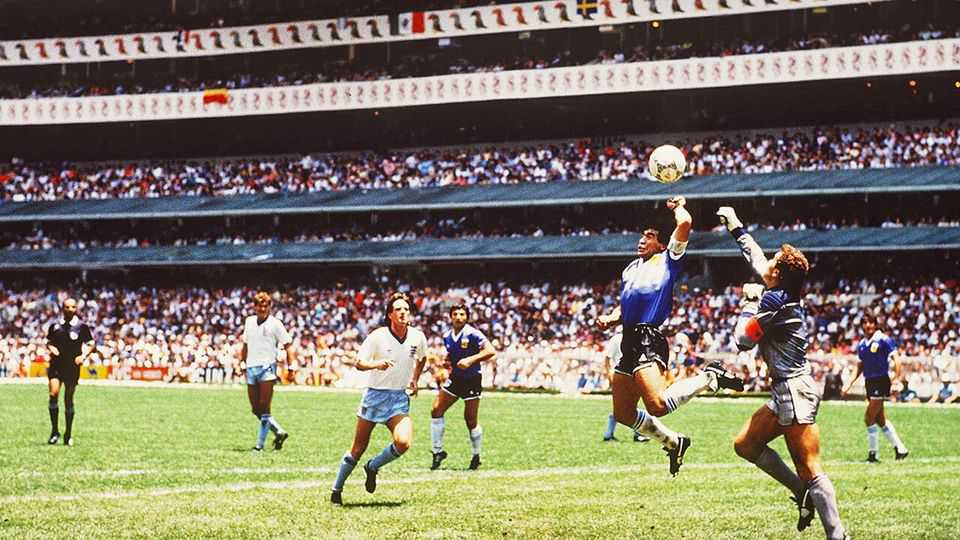

Argentina v England is one of the most intense rivalries in sport
The two countries have not played each other in over two decades
July 16th 2026

THE SUMMER of 1966 is remembered differently in two of the world’s football powerhouses. For England it was euphoric: on home turf they beat West Germany in the final to win their first—and so far only—World Cup title. For Argentina it was different. Their exit from the tournament after losing to England in the quarter-finals is a bitter memory. The contested game, in which Argentina’s captain had to be forcibly removed from the pitch, saw England score a disputed goal. England’s coach called his opponents “animals”. The game is known as el robo del siglo (the robbery of the century) in Argentina.
Six decades on, with a German coach, Thomas Tuchel, at the helm, England came as close to reclaiming the title as they have ever been. The squad lost to Argentina, the reigning world champions, 2-1 in a semi-final on July 15th. The game in Atlanta was the first time the teams had faced each other in two decades. It was still testy and foul-ridden throughout.
Lionel Scaloni, Argentina’s head coach, had insisted that it was “a football game and that is all”. Every Argentine knew that was not true. Atlanta’s police force increased security ahead of the game. Opposing fans entered from different ends of the stadium. Such was the depth, even after a long hiatus, of perhaps the most intense transcontinental rivalry in sport.
Argentina and England have now played six times at the World Cup since it began in 1930. Although animosity took off in 1966, 1986 was the year it transcended sport. Argentina had invaded the Falkland Islands four years earlier, laying claim to the British overseas territory in the South Atlantic over which both countries assert sovereignty. Argentina lost the 74-day war. Nearly one thousand people died. The Falklands remain British territory today.
When the two countries played each other in the quarter-final in Mexico City in 1986, emotions ran high. Argentine striker Diego Maradona scored two historic goals, one using la mano de Dios (the hand of God, pictured), punching the ball into the net. Argentina went on to win the tournament. Maradona later admitted to the handball, and claimed that it was revenge for Las Malvinas, as the Falklands are known in Argentina. Tension persisted in games in 1998 and 2002.
The territory remains a sticking point. Javier Milei, Argentina’s populist president, who has previously been criticised for a lack of support for the cause, has become more vocal. In April, after a leaked memo showed that the United States could review its position on British sovereignty of the islands, Mr Milei said they would “always be Argentine”.
After their win, some Argentine players celebrated by holding up a banner that read: “Las Malvinas son Argentinas.” They and the fans have been singing “The Fourth Star”, an anthem that has gone viral online. One lyric goes: “For the Malvinas, for Diego (Maradona) and for Leo’s last run (Lionel Messi, Argentina’s star player); Argentina I want to see you become back-to-back champions.” Glory is on offer in the final against Spain on July 19th. But an Argentine win won’t change anything in the Falklands. ■
Sign up to El Boletín, our subscriber-only newsletter on Latin America, to understand the forces shaping a fascinating and complex region.